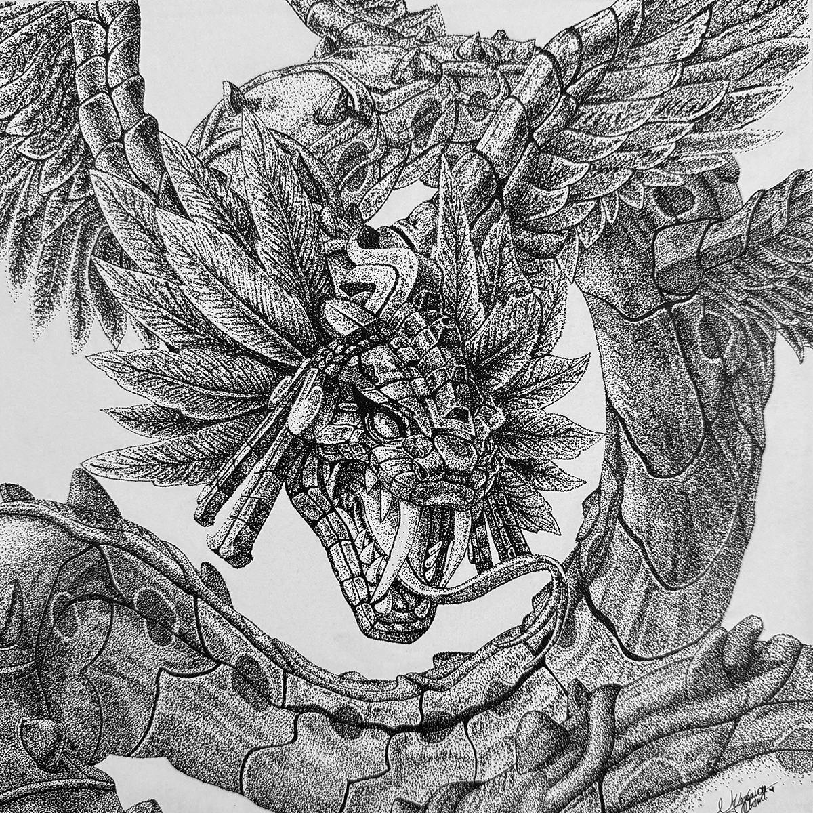
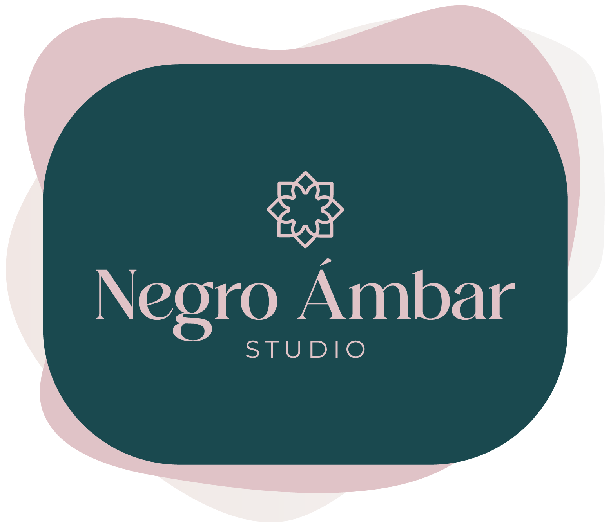
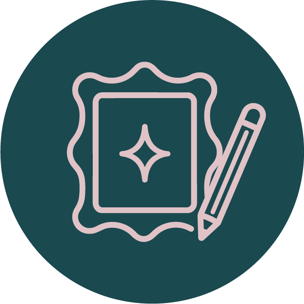
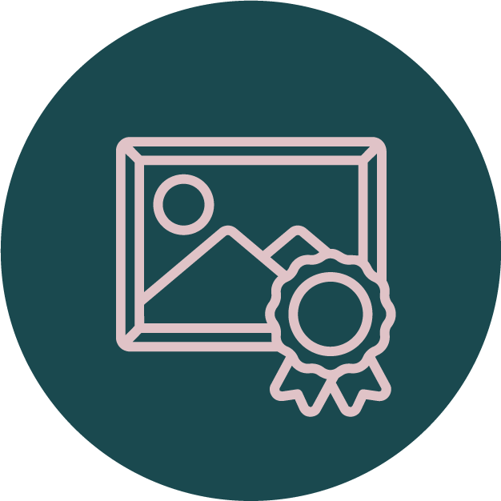
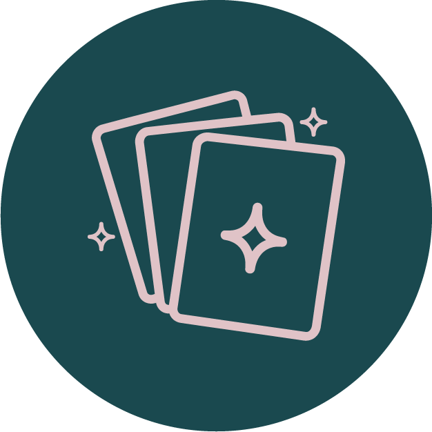
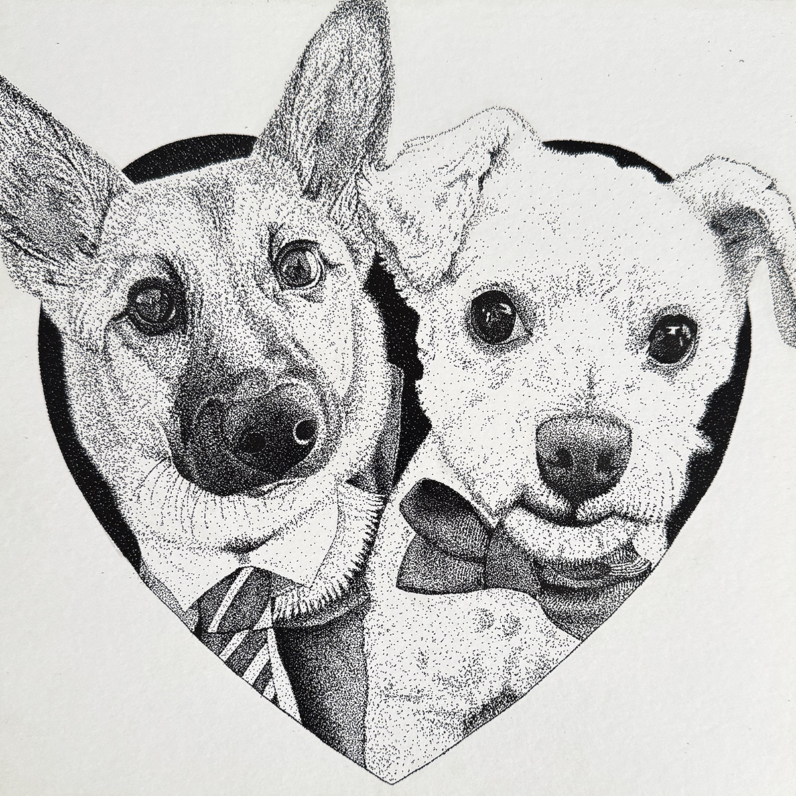
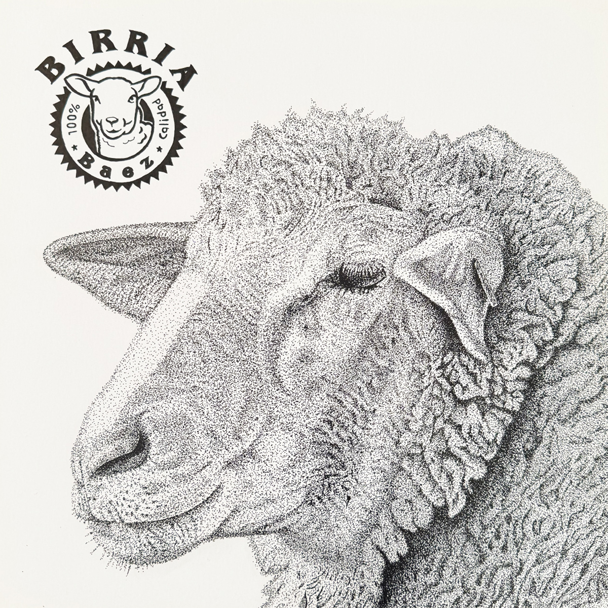
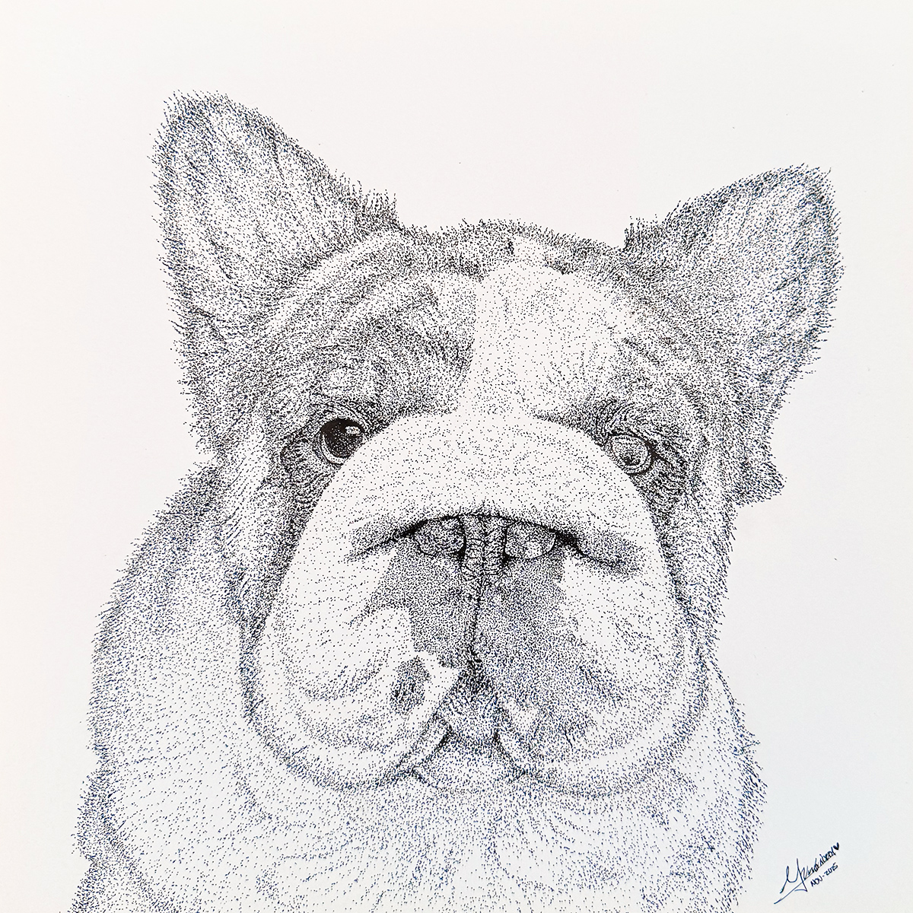

Kukulkán | SMITE Version
Ilustración original realizada en puntillismo, basada en un personaje del videojuego de SMITE
Negro Ámbar se creó como una iniciativa para dar espacio a la creatividad y el diseño. Actualmente lo uso para explorar una de mis técnicas favoritas.
Ver mi Instagram
Piezas creadas a partir de recuerdos, personas, mascotas y momentos especiales.

Ilustraciones hechas a partir de una historia, persona o recuerdo.

Series de ilustración nacidas de ideas y referencias propias.

Obra para acompañar tus espacios o regalar algo personal.
Una selección de ilustraciones creadas con tinta china y en la técnica de puntillismo.

Ilustración original realizada en puntillismo, basada en un personaje del videojuego de SMITE

Comisión personalizadoa de mascotas realizado con tinta china y puntillismo.

Ilustración personalizada creada como regalo para un negocio de birria de borrego.

Comisión de la mascota de un cliente.